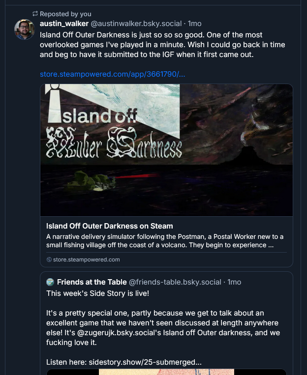
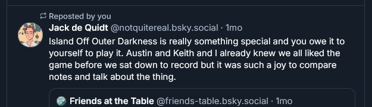

On the 28th of April I was recovering from an illness which had beset me — a common occurrence (I get sick quite often). I absentmindedly checked my Bluesky and, quite curiously, I had received a spark in engagement. I look towards the source:

Austin Walker's extremely nice Bluesky post about IOOD.

Jack's extremely nice Bluesky post about IOOD.
(Keith also made one but it was about movement tech w/ a gif so it doesn't fit as well here)
A podcast I’d never heard of had randomly done an episode on Island Off Outer Darkness (and Titanium Court). “Holy shit”, y'know!
The gist is that IOOD’s made 450ish sales since then. It’s received a shitton of reviews and I’ve gotten a lot of praise and very kind feedback. I talked with Keith in DMs after they finished it and got to hear their expanded thoughts on the ending. It was a very intense and overwhelming experience, having “success”. I, uh. I had filed IOOD away as a failure, and then it wasn't anymore. Isn’t anymore. I still don’t know how to sit with that.
It’s frozen me from blogging in a way. Cuz I’d have to write
Been working on the sequel, “Island Off Outer Dancing”. Been in production since the beginning of April, and now all of a sudden it’s not some passion project parody-but-done-literally continuation of a passion project that flopped, it’s, like. It’s the follow-up to something people liked. Which is terrifying! And if I knew I would never have planned for
I hope people stick with IOOD and IOODancing. I hope I can pull off IOODancing. I’m still surprised people so loved IOOD, something I sequestered in my mind as not very good. I guess I don’t get it. Which is strange. In the meantime, I have the budget to fucking work on whatever projects I want, holy shit. Bankrolled IOODancing commissions (with increased rates because we’re in the money now), a Steam Deck for testing IOOD & IOODancing, a Steam Controller (same purpose), a Bitwig Studio Essential license (for charting), and I still got way enough to fund a significant portion of my next big project. Which I’m actively planning, now, there’s a market for it and people who’ll respond to it. At least, I hope. If I can keep up the momentum.
Postscript: The Steam Deck was off Oklahoman Facebook Marketplace and reeks of menthols, btw. Jeez Louise new electronics are just not a thing you can buy anymore. Fuck AI!